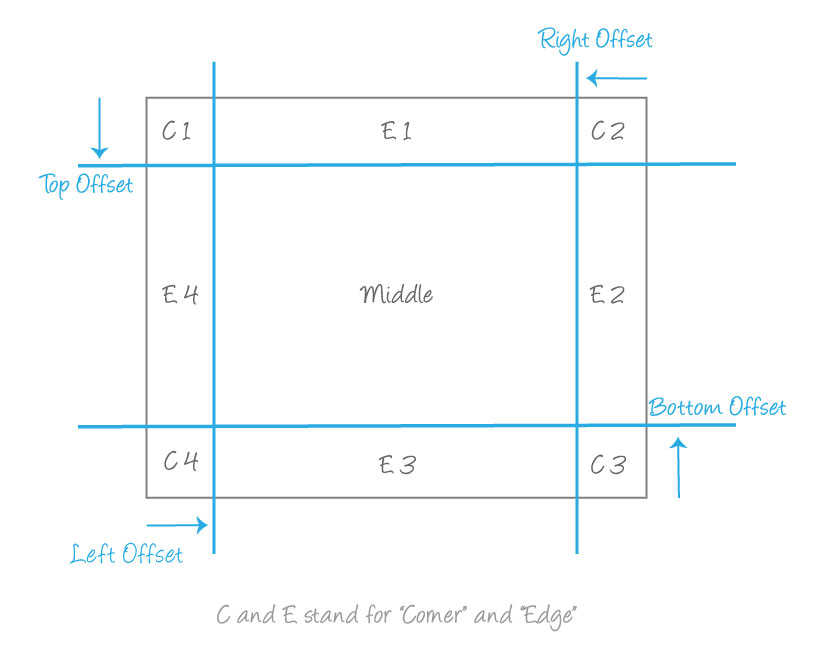

CSS中的相对量
CSS 属性的浏览器兼容性，请查询 Can I Use。
已经被标准废弃（Deprecated）的属性，没有列出。
欢迎您与我一同完善这个清单，提供数据的读者姓名将在文中标注。
（通过评论方式提供遗漏的相对量）
视口单位 (viewport)
vh：视口高度的 1/100
vw：视口宽度的 1/100
vmin：视口宽度、高度中最小值的 1/100
vmax：视口宽度、高度中最大值的 1/100
字体单位
em：元素 font-size 的大小，如果在 font-size 属性使用 em，则 em 表示该元素继承下来的 font-size 大小。rem：根元素 <html> 的font-size 大小。如果 rem 用在根元素的 font-size 上，则 1 rem 表示根元素 font-size 的初始值。
<position>：偏移量的百分比是相对于元素盒的宽度、高度。水平方向（x轴）的百分比相对于元素盒的宽度。竖直方向（y轴）的百分比相对于元素盒的高度。
函数
rgb/rgba：RGB 三个通道，正整数值的取值范围为：0 - 255。百分数值的取值范围为：0.0% - 100.0%。Alpha 通道，a = 0表示透明，a = 1 表示不透明。
hsl/hsla：s 通道表示饱和度，取值范围是 0 - 100%。l 通道表示亮度，取值范围是 0 - 100%。Alpha 通道，a = 0表示透明，a = 1 表示不透明。
百分比（<percentage>, %）
许多长度属性使用百分比，例如
- width、height
- max-height/min-height、max-width/min-width
- margin
- padding
- font-size
- border-width
- text-shadow
- background-size
- background-position
- top、bottom、left、right
- line-height
- text-indent
- vertical-align
注意：只有计算后的属性会被继承。当一个父属性使用百分比时，在继承属性（子属性）上会计算父属性的通过百分比计算后的实际值，不会将百分比继承下来。
“定位”属性top/bottom：在top属性中，使用 % ，表示相对于包含块的高度百分比。可以为负值。right/left：表示相对于包含块的宽度百分比。可以为负值。
“弹性盒模型”属性flex-basis：百分比指的是 flex 容器的内部主尺寸（inner main size）的百分比。
即，a percentage of the parent flex container main size property
min-height/min-width：初始值为0。
“尺寸”属性width/max-width/min-width：指的是包含块的宽度百分比。如果包含块的宽度依赖本元素宽度，则布局结果未定义。
height/max-height/min-height：指的是元素生成盒（generated box）的包含块（containing block）的高度。如果包含块的高度没有显式指定（依赖于内容高度），并且本元素没有绝对定位，则 height 值计算为 auto，max-height 值计算为 none，min-height 值计算为 0。根元素的百分比高度相对于根元素的初始包含块。
“外边距”属性margin：指的是包含块的宽度百分比。可以是负值。margin-top/margin-bottom：指的是包含块的宽度百分比。margin-left/margin-right：指的是最近包含块的宽度百分比。
“内边距”属性padding：指的是包含块的宽度百分比。padding-top/padding-bottom：指的也是包含块的宽度百分比。padding-left/padding-right：指的也是包含块的宽度百分比。
“边框”属性border-image：缩写形式，其中的 border-image-slice、border-image-width 有百分比设置。border-image 的详细用法，请参考这里。border-image-slice：可以制定最多4个值，其中的某个值的百分比指的是相对于图片尺寸的百分比。border-image-width：指的是边界图像区域(border image area)的尺寸百分比。将要绘制边界图像的整个区域称为边界图像区域。border-image-width属性用于缩放 border-image-slice。

border-radius：指的是圆形半径或椭圆形的长半轴、短半轴。水平方向的轴的百分比值对应边界盒（border box）的宽度。垂直方向的轴的百分比值对应边界盒（border box）的高度。border-top-left-radius/border-top-right-radius/border-bottom-right-radius/border-bottom-left-radius：圆角水平轴的值对应边界盒的宽度。圆角垂直轴的值对应边界盒的高度。
“背景”属性background：缩写中的属性值分别对应各自的百分比意义。如 background-position、background-size。background-position：百分比指的是背景定位区域的尺寸减去背景图片的尺寸。这里的尺寸指的是，水平偏移的宽度或者垂直偏移的高度。background-size：百分比值相对于背景定位区域。background-size用于确定背景图片的大小。
“字体”font：缩写，百分比值用于设置 font-size 分量，含义与 font-size 相同。font-size：百分比值相对于父元素的 font-size 值。line-height：百分比值相对于元素自身的 font-size 值。
“文本”text-indent：百分比值相对于元素包围盒（the containing block）的宽度。word-spacing：百分比值相对于受影响文字（glyph）宽度。vertical-align：百分比值相对于元素自身的 line-height 属性值。
“用户界面”zoom：百分比值指的是缩放引子自己。
“2D变换” (实验)transform：百分比值相对于包围盒（bounding box）尺寸。transform-origin：百分比值相对于包围盒（bounding box）尺寸。
数字相对量（<number>）
font-size-adjust(CSS3)：设置小写x字母的高度。计算方法为指定的 数字值 乘以 font-size。zoom：数字值指的是缩放引子自己。
整数相对量（<integer>）
border-image-width：指的是元素 border-width 计算值的倍数。
参考资料
- http://acgtofe.com/posts/2014/06/percentage-in-css
- http://www.yuuuuc.me/percentage-in-css/
- https://segmentfault.com/a/1190000006736433
- 所有 CSS 属性取百分比值的意义，https://web.archive.org/web/20150906065047/https://developer.mozilla.org/en-US/docs/Web/CSS/CSS_percentage_values
- 属性分类方法，http://www.w3chtml.com/css3/properties/positioning/